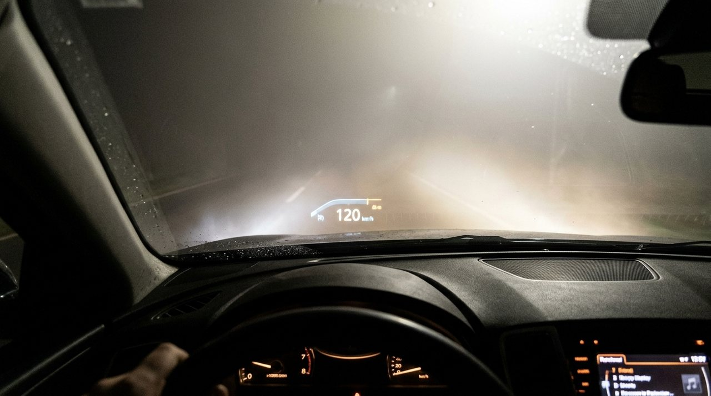

Aviation
Reduced airport capacity, delays and occasional diversions.
A local observation, made accessible
VisioSense explores how a fixed camera and edge AI can turn recognizable landmarks into a simple local visibility estimate.
Prototype overview · This site does not show live device data

Why visibility matters
Reduced airport capacity, delays and occasional diversions.
Disrupted port operations and greater navigation risk.

03Lower speeds and greater collision risk in reduced visibility.
Reduced visibility can sometimes accompany poor air quality; VisioSense does not measure pollution.
The approach
The prototype captures a still image about every five seconds, detects objects on the UNO Q, and records visibility alongside temperature and relative humidity.
A USB camera watches a fixed scene containing recognizable proxy landmarks.
The Arduino UNO Q runs object detection at the edge; image processing does not depend on cloud inference.
The furthest detected proxy maps to a demo value. Thermo readings are recorded as separate observations.
The mock-scene demonstration
The cup is the nearer proxy. The bottle is farther away, so it sets the higher demo value whenever it is detected.
Demo only. These values use miniature props and are not calibrated measurements of real-world visibility.
Explore the concepts
These pages are visual concepts with simulated examples, not a connection to a running board.
What comes next
The miniature scene demonstrates the detection idea. Field use would require landmarks at known real distances and validation against a reference visibility instrument. Forecasting remains future research, not a current feature.